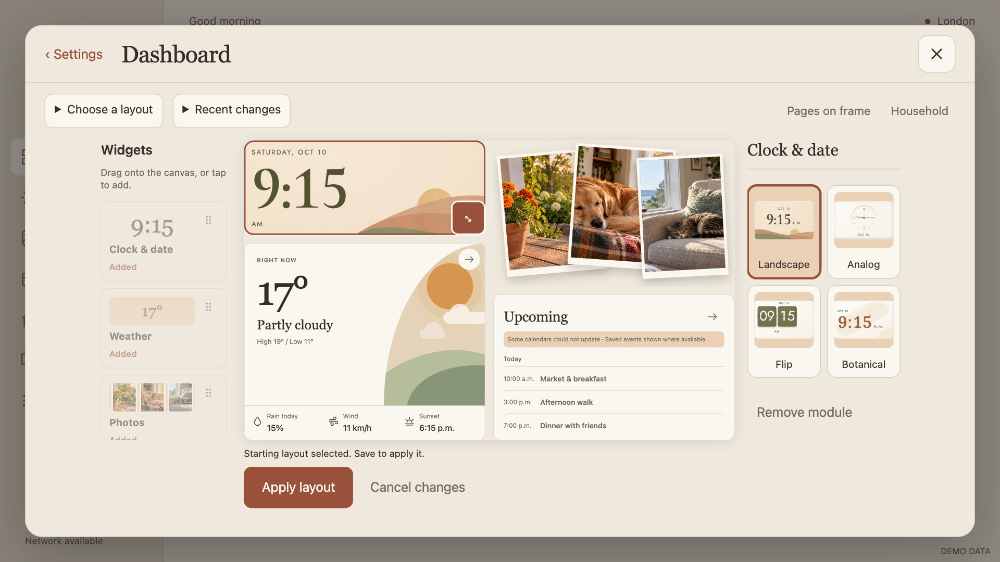

OCTOBER 13, 2026 · SYNTHETIC PREVIEWS
Dashboard editor: connected panels, usable space
The palette, canvas and inspector now form one workspace. Unused center-column space no longer pushes the inspector away from the canvas.
Before and after · frame size
 Before · 1280×720 CSS pixels
Before · 1280×720 CSS pixels
After · 1280×720 CSS pixelsWhat changed
- Removed inherited Settings-card padding that squeezed the widget palette.
- Made the center grid track match the fitted canvas width. Both side panels stay beside the canvas, with 12–16 pixel gutters.
- Reduced header spacing and replaced the fixed height allowance with measured status and action heights.
- Aligned Apply/Cancel with the canvas and grouped the toolbar controls.
- Kept independently scrolling side panels and the narrow-screen stacked fallback.
The dashboard composition, clock artwork, drag/resize behavior and staged Apply/Cancel flow are preserved.
Verification
Browser geometry checks pass at five sizes, including narrow fallback. All 13 Settings workflow groups pass with 62 captures and no runtime errors. All 86 JavaScript and 19 Python tests pass. One Chrome capture timed out; the retry completed at all five sizes. These changes are not installed on the physical frame or merged.